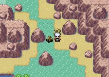
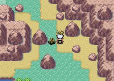

Vorausdeutung
Der Vorgang den Spielern neue Elemente in einer vom Leveldesigner vorgesehenen Umgebung zeigen, bevor diese tatsächlich als Teil des Spiels integriert werden.
Durch die kontrollierte Situation können dem Spieler neue Spielobjekte oder Spielmechaniken in Ruhe beigebracht werden. Hat der Spieler diese verinnerlicht ergeben sich daraus neue Möglichkeiten der Gestaltung des Spielverlaufs. Dadurch soll die Neugier der Spieler angekurbelt werden, kann aber auch je nach einzuführendem Element, Sorge vor dem weiteren Verlauf des Spielgeschehens bereiten (z.B. vor Spinnen als Gegnern, bei Menschen mit Arachnophobie). Durch die neuen Möglichkeiten, ermutigt es dazu nochmals zurückzugehen und zu schauen ob man etwas übersehen hat.
``Legend of Zelda: Link to the past'', zeigt das berühmte Masterschwert, welches in einem Stein steckt. Man kann es erst verwenden sobald man drei Amulette gesammelt hat und anschließend mit dem Schwert interagiert.
Bei ``Pokemon Smaragd'' gibt es Felsen, welche man zerstören muss um weiter zu kommen. Dafür benötigt man jedoch zuerst die Attacke ``Zertrümmerer''.